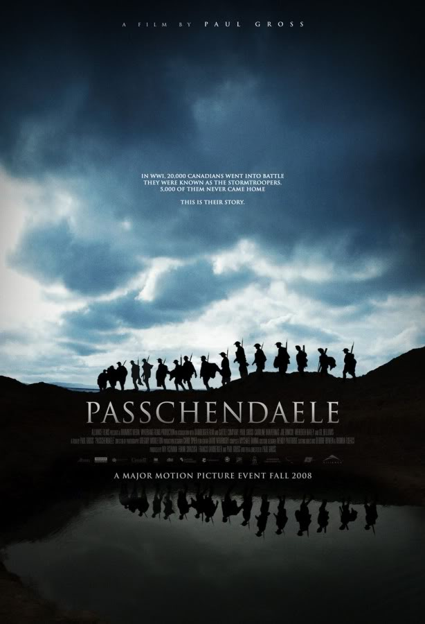

The true story of the struggle to take over the infamous Japanese Hacksaw Ridge during World War II. The story revolves around the healthcare professional Desmond T Doss who refused to carry the weapon he was badly treated for refusing to wear weapons but eventually he "graduated" from bootcamp with the help of his father who fought in the First World War and he went to an officer and received a letter that allowed Desmond to participate without carrying weapons. He then becomes a healthcare practitioner as he wanted to and was sent to hacksaw ridge where he rescues several people after the first attack one by one he sends down injured for the edge to safety. Desmond's heroism made him the first weapon refusing of history to receive the American honorary medal.
Passchendaele is a Canadian war drama movie from 2008 focusing on a Canadian soldier during the third battle of Ypres. It reflects the brutality of the First World War through aspects like war / love hatred and misunderstanding, but it also shows that just because people stand on opposite sides they do not need to hate each other.
